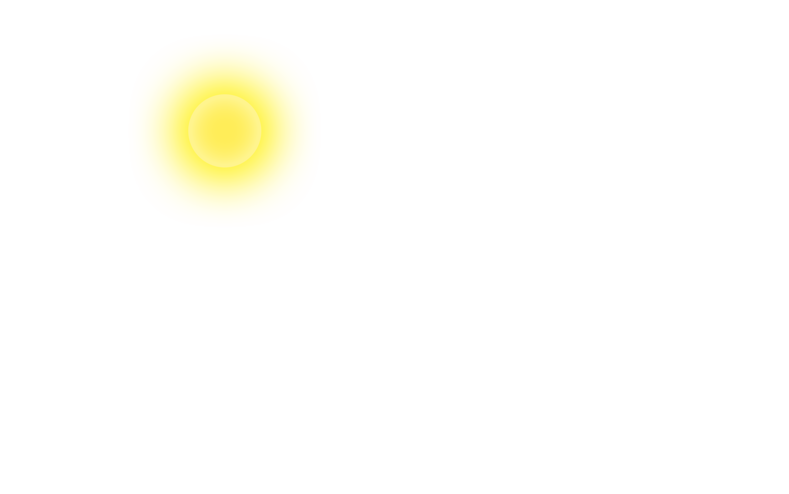
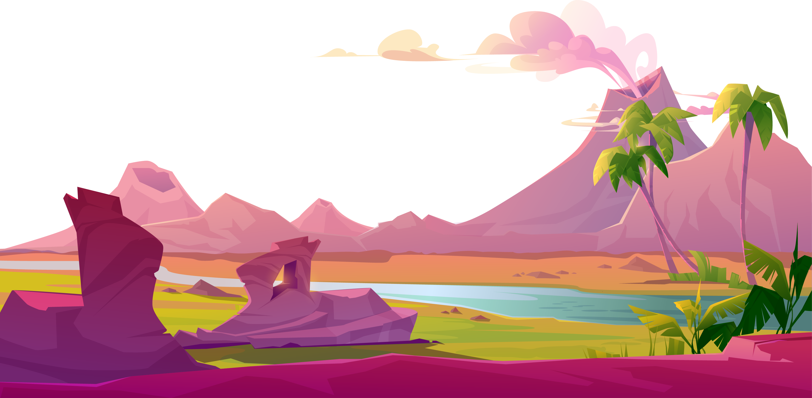

Hi I'm waiting for you
Ricki Maulana A


Lets Scrolling !

Di pantai yang berada di tepi samudra yang luas, terdapat sebuah cerita fantasi yang menggelar pesona di
sore hari. Saat matahari hampir terbenam, langit berubah menjadi paduan warna yang menakjubkan. Dari
keemasan yang memukau hingga oranye dan merah yang membara, pantulan cahaya matahari pada butiran pasir
memberikan kesan magis. Para pengunjung yang berada di pantai tersebut takjub akan keindahan alam yang
terpancar begitu kuat.
Di tengah pesona alam tersebut, terdapat makhluk-makhluk fantasi yang muncul dari balik ombak. Mereka
adalah putri-putri laut yang memiliki ekor ikan yang indah dan memancarkan keanggunan. Dengan suara
merdu, mereka bernyanyi menyambut matahari yang semakin tenggelam ke laut. Pesona suara mereka menyentuh
hati semua orang yang berada di pantai. Beberapa pengunjung yang beruntung bahkan mendapat kesempatan
untuk berinteraksi dengan mereka dan mendengarkan kisah-kisah menakjubkan dari dunia bawah laut.
Selain putri-putri laut, pantai ini juga dihuni oleh peri-peri kecil yang bersembunyi di balik
karang-karang. Dengan sayap yang transparan dan kilauan cahaya di sekujur tubuh mereka, peri-peri ini
menjaga keselarasan alam di pantai. Mereka bermain-main dengan anak-anak yang berlarian di sepanjang
pantai, memberikan semangat dan kebahagiaan. Para pengunjung pun merasa beruntung dapat melihat aksi
kecil ini, yang membuat pantai terasa lebih ajaib, saat matahari benar-benar tenggelam ke cakrawala,
pantai fantasi ini berubah menjadi pemandangan yang magis. Cahaya keemasan memenuhi seluruh pantai,
menciptakan efek menyilaukan. Di tengah kilauan itu, terdapat portal ajaib yang membuka jalan ke dunia
fantasi. Siapa pun yang berani melangkah melewatinya akan dibawa ke petualangan luar biasa di negeri
dongeng. Pantai di sore hari ini tidak hanya memberikan keindahan alam yang luar biasa, tetapi juga
menawarkan pintu menuju dunia fantasi yang tak terlupakan.
Di negeri dongeng yang terbuka melalui portal ajaib di pantai fantasi ini, ada berbagai makhluk dan
mahluk magis yang hidup harmonis. Ksatria pemberani berkuda naga melintasi hutan yang dipenuhi dengan
tumbuhan berwarna-warni dan makhluk-makhluk mistis. Peri-peri dengan sayap gemerlap berdansa di sekitar
air terjun berkilauan, mengisi udara dengan musik yang magis. Para petualang dapat menjelajahi gua-gua
tersembunyi dan menemukan harta karun ajaib yang hanya ada dalam imajinasi.
Saat malam tiba, langit di negeri dongeng ini berubah menjadi panggung bagi pertunjukan cahaya yang
spektakuler. Kembang api berwarna-warni meledak di angkasa, menciptakan gambar-gambar yang menakjubkan.
Bintang-bintang berkelap-kelip memberikan cahaya lembut yang menerangi jalan para pengelana yang tak
kenal lelah. Di pantai fantasi ini, sore hari bukanlah akhir dari petualangan, melainkan awal dari
cerita-cerita yang tak terhingga dan keajaiban-keajaiban yang menunggu untuk diungkap.
~ Ornamen Design Beberapa Diambil Dari Freepik & DiModifikasi. ~
Click "OK" to play music and scroll this website.